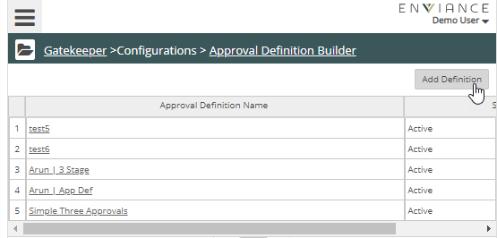
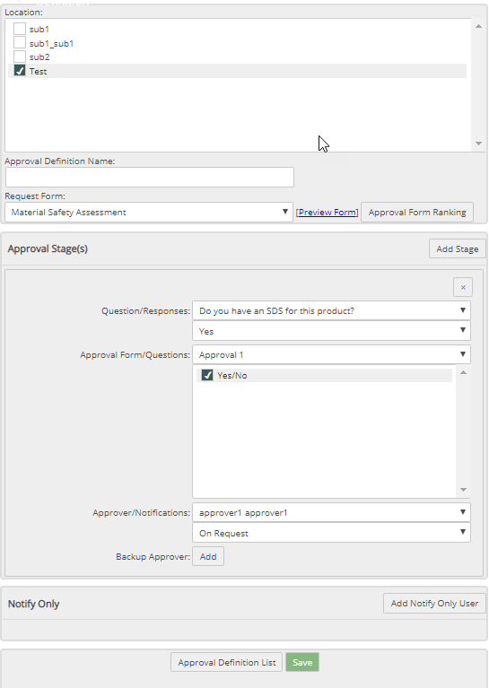
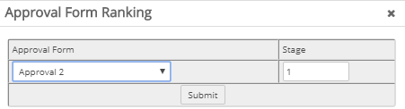
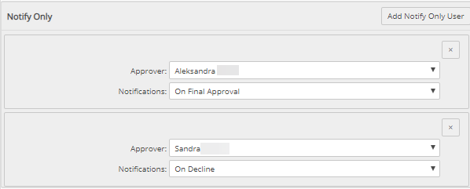

Click Gatekeeper Main Menu ( ). The Gatekeeper navigation pane displays. Select Approval Definition Builder from the Configurations list.
). The Gatekeeper navigation pane displays. Select Approval Definition Builder from the Configurations list.

The Approval Definition List displays.

Click Add Definition.
The Approval Definition List displays.
Select the Request Form this to use from the dropdown list.
The request form must be active to be available in the list. If a form you created is not listed, go to the request or approval form list and ensure the form is active.
Select a Question from the drop-down list, then select an answer to map for the workflow.
The first Question/Response drop-down shows all the questions on the Request Form. The second drop-down below it shows the possible responses.
Select the Approval Form from Approval Form list.
The questions on the approval form are displayed below the form name. You can select all the question to use the whole approval form in the workflow.
Alternately, you can select just specific questions (one or more) to just show those questions from the approval form to the approver, based on the answer. You can customize the approval flow based on the response.
Choose the Approver to assign the approval form to. Available users listed are all users who have been given access to Gatekeeper through a Gatekeeper role assignment in their user profile.
From the Notifications, select the condition for notification. Options are On Request, On Final Approval, On Previous Approval, On Decline, Always or Never.
Optionally you can choose a backup approver: Click Add to select a user.

You can create several approval paths based on various questions. In the example above, in addition to the Plant Safety Analysis, another set of questions initiate the Product Safety Analysis, and yet another set of questions initiates the Environmental Analysis.
When there are multiple approval paths, the forms must be ranked according to approval stage.
To set the ranking by stage, select Approval Form Ranking.
The Approval Form paths you have identified are listed.
For each approval path, select what stage of the process they belong to.
To set up additional notifications, In the Notify Only section at the bottom of the form, choose the User from the drop-down list.
Select the notification condition: Always, On Request, On Final Approval, On Decline.
Optionally, if the request applies to more than one location, you can select the Location the notification applies to. Click Add and choose a location from the list.

When you are finished configuring the Approval Form Definition, click Update.
Click Approval Definition List to return to the list.